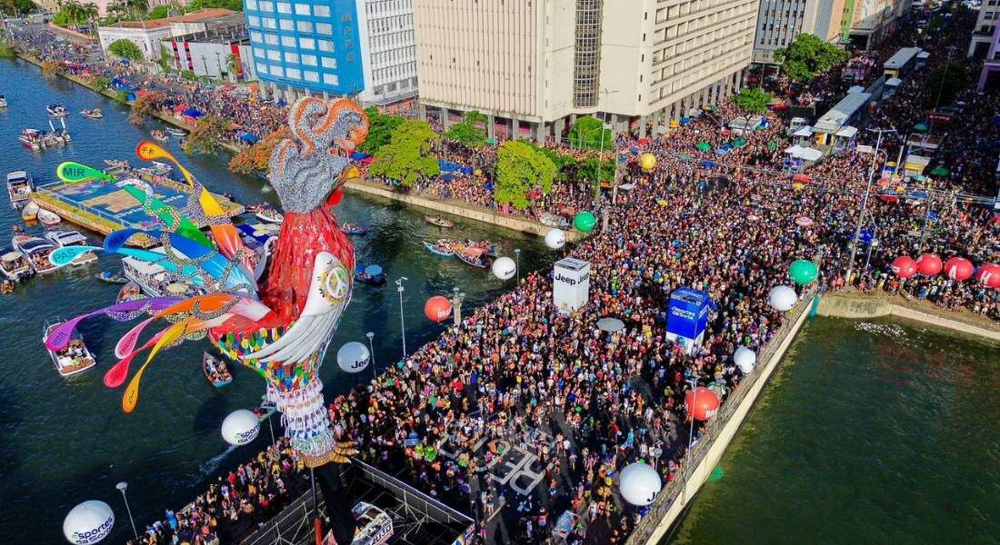

Marco Zero
Marco Zero em Recife-PE
Explorando Minha Cidade: O Recife e o Marco Zero
Sou recifense de coração e alma, nascido e criado nesta cidade repleta de história e cultura. Hoje, vou
compartilhar um pouco sobre os encantos do Recife, com destaque especial para o nosso Marco Zero, um dos
pontos mais icônicos e amados por quem vive ou visita aqui.
Começo pelo Marco Zero, que é mais do que um marco geográfico; é o coração do Recife Antigo. Essa praça,
oficialmente chamada de Praça Rio Branco, é rodeada por edifícios históricos como a Associação Comercial
de Pernambuco e exibe no chão uma belíssima Rosa dos Ventos, obra do artista pernambucano Cícero Dias. É
impossível não se encantar ao pisar no local e sentir a energia que ele transmite.
De frente para o Marco Zero, o Parque de Esculturas Francisco Brennand chama a atenção com suas obras
impressionantes e, claro, a famosa Torre de Cristal. O trajeto de barco para chegar até lá é uma
experiência à parte, permitindo uma vista espetacular do Recife Antigo e do Porto do Recife.
 Ao lado do Marco Zero, o Centro de Artesanato de Pernambuco é um dos meus lugares favoritos para mostrar
aos amigos que visitam a cidade. Lá, temos uma rica exposição do talento dos nossos artesãos, com peças
que vão desde a cerâmica até o bordado, todas cheias de detalhes e história.
Outro local indispensável é o Museu Cais do Sertão, onde é possível mergulhar na cultura sertaneja. O
museu tem uma abordagem moderna e interativa, com sons, imagens e objetos que contam a história do
sertão nordestino e seus personagens.
Caminhando pelas ruas do Recife Antigo, chegamos à Sinagoga Kahal Zur Israel, a primeira das Américas.
Sempre me impressiono com a importância histórica deste lugar, que preserva a memória da comunidade
judaica que viveu por aqui.
O Paço do Frevo é outro tesouro. É incrível como o espaço mantém viva a tradição do frevo, ritmo que é a
alma do carnaval pernambucano. Para quem gosta de dançar ou aprender algo novo, as oficinas oferecidas
são uma experiência inesquecível.
E não podemos esquecer a vida noturna do Recife Antigo. Os antigos armazéns, que agora abrigam Bares e Restaurantes, oferecem de tudo: boa música, comida deliciosa e uma
atmosfera única. Seja um happy hour ou uma saída mais animada, o lugar é sempre convidativo.
O Recife é muito mais do que um ponto no mapa. É uma cidade cheia de história, com o Marco Zero como
símbolo de onde tudo começa – e continua – pulsando vida e cultura.
Ao lado do Marco Zero, o Centro de Artesanato de Pernambuco é um dos meus lugares favoritos para mostrar
aos amigos que visitam a cidade. Lá, temos uma rica exposição do talento dos nossos artesãos, com peças
que vão desde a cerâmica até o bordado, todas cheias de detalhes e história.
Outro local indispensável é o Museu Cais do Sertão, onde é possível mergulhar na cultura sertaneja. O
museu tem uma abordagem moderna e interativa, com sons, imagens e objetos que contam a história do
sertão nordestino e seus personagens.
Caminhando pelas ruas do Recife Antigo, chegamos à Sinagoga Kahal Zur Israel, a primeira das Américas.
Sempre me impressiono com a importância histórica deste lugar, que preserva a memória da comunidade
judaica que viveu por aqui.
O Paço do Frevo é outro tesouro. É incrível como o espaço mantém viva a tradição do frevo, ritmo que é a
alma do carnaval pernambucano. Para quem gosta de dançar ou aprender algo novo, as oficinas oferecidas
são uma experiência inesquecível.
E não podemos esquecer a vida noturna do Recife Antigo. Os antigos armazéns, que agora abrigam Bares e Restaurantes, oferecem de tudo: boa música, comida deliciosa e uma
atmosfera única. Seja um happy hour ou uma saída mais animada, o lugar é sempre convidativo.
O Recife é muito mais do que um ponto no mapa. É uma cidade cheia de história, com o Marco Zero como
símbolo de onde tudo começa – e continua – pulsando vida e cultura.
Venha conhecer o maior e melhor carnaval do mundo.
O Galo da Madrugada: O Maior Bloco de Carnaval do Mundo O Galo da Madrugada é mais do que um bloco de carnaval do Recife-PE; é um símbolo da cultura pernambucana e da alegria contagiante do Recife. Fundado em 1978, o bloco nasceu com o objetivo de revitalizar o carnaval de rua da cidade e rapidamente se tornou uma das maiores expressões culturais do Brasil. Todo ano, no sábado de Zé Pereira, as ruas do centro do Recife se transformam em um mar de foliões. O desfile começa logo cedo, como o nome sugere, e arrasta milhões de pessoas pelas avenidas, ao som do frevo, o ritmo mais autêntico de Pernambuco. A marca registrada do bloco é o imponente galo gigante, que muda de visual a cada edição, sendo aguardado com grande expectativa. O bloco entrou para o Guinness Book como o maior bloco de carnaval do mundo, título que orgulha os pernambucanos e atrai turistas do Brasil e do exterior. O Galo da Madrugada não é apenas um evento; é uma experiência única, que celebra a tradição, a criatividade e o espírito acolhedor do povo recifense. Estar no Galo da Madrugada é vivenciar a essência do carnaval de Pernambuco, com sua música vibrante, danças animadas e um cenário cultural que só o Recife pode oferecer. É impossível não se apaixonar!
Temos um Litoral Fantástico

O Litoral Pernambucano e a Beleza de Porto de Galinhas O litoral de Pernambuco é conhecido por suas praias paradisíacas, águas mornas e cenários deslumbrantes. Desde o norte, com as praias de Itamaracá e Maria Farinha, até o sul, que abriga verdadeiras joias naturais, como Porto de Galinhas, o estado é um convite ao turismo e à contemplação. Porto de Galinhas, localizada no município de Ipojuca, é o principal destaque. Eleita várias vezes como a melhor praia do Brasil, encanta visitantes com suas piscinas naturais formadas por recifes de coral, ideais para mergulho e observação da vida marinha. Durante a maré baixa, é possível fazer passeios de jangada e admirar a riqueza da biodiversidade local. A praia oferece uma infraestrutura completa, com bares, restaurantes e hotéis que atendem a todos os perfis de viajantes. Além das águas cristalinas e areias brancas, Porto de Galinhas tem atrativos como o Pontal de Maracaípe, um lugar perfeito para relaxar e apreciar o encontro do rio com o mar. Seu charme único, aliado à hospitalidade pernambucana, faz de Porto de Galinhas o destino ideal para quem busca uma experiência inesquecível no Litoral do Brasil.